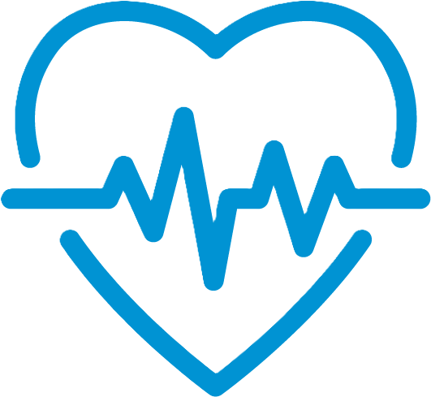

Riverview Heights Primary Schoo
Growing Healthy Together
Health Finance Fundraising for Riverview Heights Primary School students
Healthy Eating:
- Improve school menus with more nutritious options, for more healthy habits.
- Implement a fuit and vegetable program for ensure learners get essential nutrients.
Physical Activity
- Increase outdoor playtime and sports to keep learners active.
- Introduce activities like yogo to support physical and metal well-being.
Mental Health
Train teachers to better support learners mental health needs.
Create a 'Buddy-system' to encourage metorship and support.
Hygiene and Safety
- Upgrade the handwashing facilities to improve students hygiene standards.
- Implement a "Clean-Slate" classroom policy to motivate learners.
Emotional Intelligence
- Include emotional intelligence in the school curriculum to build self-awareness, empathy and decision making skills.
- Offer workshops to help learners understand and mange their emotions.
Timeline for completing campaign
Month 1: needs assessment and fundraising planning
Month 2: secure finance, run teaching training, procure resources
Month 3: launch healthy eating and physical activity program
Month 4: evaluate impact and report outcomes
This fundraising campaign will be held every first Friday of every month
The mission of the campaign is to empower learners, teachers, and parents with the knowledge and practical tools necessary to make healthier choices every day. By providing guidance and support, the campaign aims to foster a supportive school environment where health is prioritised, and positive habits are actively encouraged. Through collaboration among all stakeholders, the campaign works to build a safer, healthier, and more productive learning community where everyone contributes to overall well-being.
Reference List:
Link 1
Link 2
Link 3
Link 4
Link 5
Link 6
Link 7
Link 8
Members of Project
